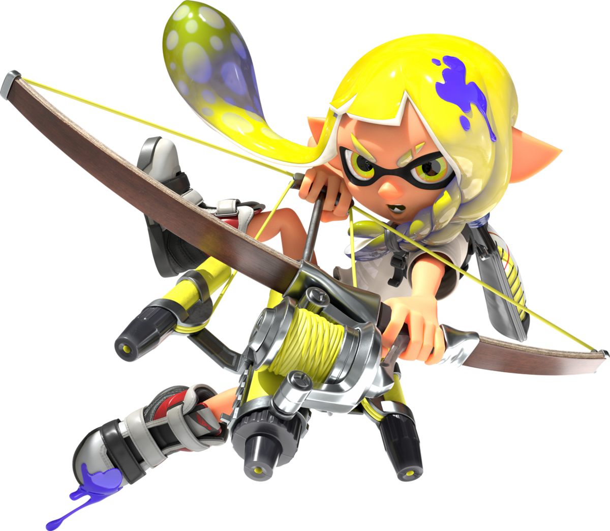
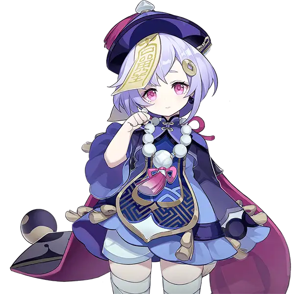
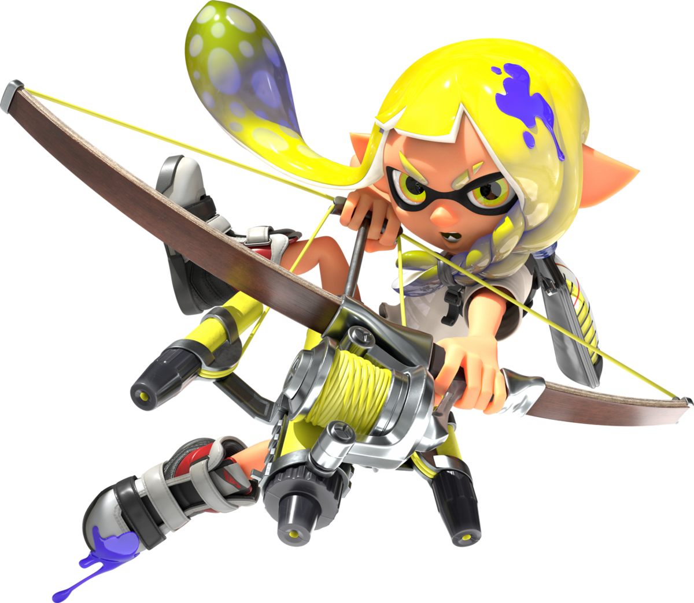
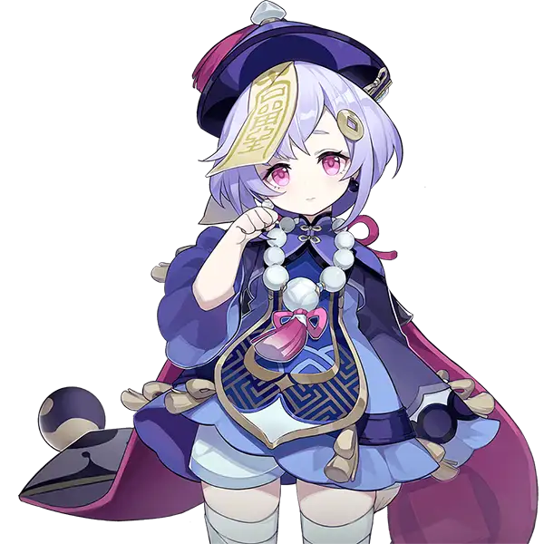

Kirby
dsad
Inkling
|  | dsad |
Luigi
 |
dsad |
Qiqi
|  | dsad |
Juan Carlos calderón García
PreguntasEsta es una lista de mis personajes favoritos, a continuación voy a explicar por qué son de mis personajes favoritos.
|  | dsad |
|
dsad |
|  | dsad |